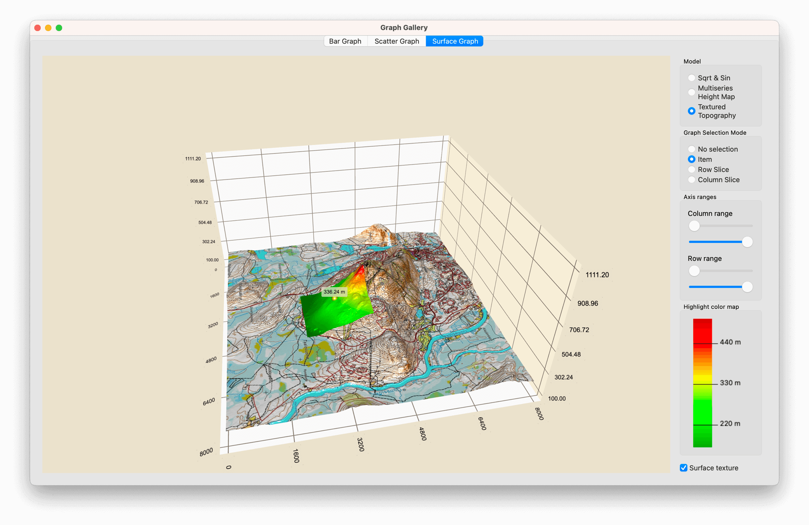

Graph Gallery
Gallery of Bar, Scatter, and Surface graphs.
Graph Gallery demonstrates all three graph types and some of their special features. The graphs have their own tabs in the application.

Running the Example
To run the example from Qt Creator, open the Welcome mode and select the example from Examples. For more information, visit Building and Running an Example.
Bar Graph
In the Bar Graph tab, create a 3D bar graph using Q3DBars and combine the use of widgets to adjust various bar graph qualities. The example shows how to:
- Create an application with Q3DBars and some widgets
- Use QBar3DSeries and QBarDataProxy to set data to the graph
- Adjust some graph and series properties using widget controls
- Select a row or a column by clicking an axis label
- Create a custom proxy to use with Q3DBars
For information about interacting with the graph, see this page.
Creating the Application
First, in bargraph.cpp, instantiate Q3DBars:
m_barsGraph = new Q3DBars();
Then, create the widget, and horizontal and vertical layouts.
The graph is embedded in a window container using QWidget::createWindowContainer(). This is required because all data visualization graph classes (Q3DBars, Q3DScatter, Q3DSurface) inherit QWindow. This is the only way to use a class inheriting QWindow as a widget.
Add the graph and the vertical layout to the horizontal one:
m_barsWidget = new QWidget; auto *hLayout = new QHBoxLayout(m_barsWidget); m_container = QWidget::createWindowContainer(m_barsGraph, m_barsWidget); m_barsGraph->resize(minimumGraphSize); m_container->setMinimumSize(minimumGraphSize); m_container->setMaximumSize(maximumGraphSize); m_container->setSizePolicy(QSizePolicy::Expanding, QSizePolicy::Expanding); m_container->setFocusPolicy(Qt::StrongFocus); hLayout->addWidget(m_container, 1); auto *vLayout = new QVBoxLayout(); hLayout->addLayout(vLayout);
Next, create another class to handle the data addition and other interaction with the graph:
auto *modifier = new GraphModifier(m_barsGraph, this);
Setting up the Bar Graph
Set up the graph in the constructor of the GraphModifier class:
GraphModifier::GraphModifier(Q3DBars *bargraph, QObject *parent) : QObject(parent), m_graph(bargraph),
First, create the axes and the series into member variables to support changing them easily:
m_temperatureAxis(new QValue3DAxis), m_yearAxis(new QCategory3DAxis), m_monthAxis(new QCategory3DAxis), m_primarySeries(new QBar3DSeries), m_secondarySeries(new QBar3DSeries), m_celsiusString(u"°C"_s)
Then, set some visual qualities for the graph:
m_graph->setShadowQuality(QAbstract3DGraph::ShadowQualitySoftMedium); m_graph->activeTheme()->setBackgroundEnabled(false); m_graph->activeTheme()->setFont(QFont("Times New Roman", m_fontSize)); m_graph->activeTheme()->setLabelBackgroundEnabled(true); m_graph->setMultiSeriesUniform(true);
Set up the axes and make them the active axes of the graph:
m_temperatureAxis->setTitle("Average temperature"); m_temperatureAxis->setSegmentCount(m_segments); m_temperatureAxis->setSubSegmentCount(m_subSegments); m_temperatureAxis->setRange(m_minval, m_maxval); m_temperatureAxis->setLabelFormat(u"%.1f "_s + m_celsiusString); m_temperatureAxis->setLabelAutoRotation(30.0f); m_temperatureAxis->setTitleVisible(true); m_yearAxis->setTitle("Year"); m_yearAxis->setLabelAutoRotation(30.0f); m_yearAxis->setTitleVisible(true); m_monthAxis->setTitle("Month"); m_monthAxis->setLabelAutoRotation(30.0f); m_monthAxis->setTitleVisible(true); m_graph->setValueAxis(m_temperatureAxis); m_graph->setRowAxis(m_yearAxis); m_graph->setColumnAxis(m_monthAxis);
Give axis labels a small autorotation angle with setLabelAutoRotation() to make them orient slightly toward the camera. This improves axis label readability at extreme camera angles.
Next, initialize the visual properties of the series. Note that the second series is initially not visible:
m_primarySeries->setItemLabelFormat(u"Oulu - @colLabel @rowLabel: @valueLabel"_s); m_primarySeries->setMesh(QAbstract3DSeries::MeshBevelBar); m_primarySeries->setMeshSmooth(false); m_secondarySeries->setItemLabelFormat(u"Helsinki - @colLabel @rowLabel: @valueLabel"_s); m_secondarySeries->setMesh(QAbstract3DSeries::MeshBevelBar); m_secondarySeries->setMeshSmooth(false); m_secondarySeries->setVisible(false);
Add the series to the graph:
m_graph->addSeries(m_primarySeries); m_graph->addSeries(m_secondarySeries);
Finally, set the camera angle by calling the same method the camera angle change button in the UI uses to cycle through various camera angles:
changePresetCamera();
The camera is controlled via the scene object of the graph:
static int preset = Q3DCamera::CameraPresetFront; m_graph->scene()->activeCamera()->setCameraPreset((Q3DCamera::CameraPreset)preset); if (++preset > Q3DCamera::CameraPresetDirectlyBelow) preset = Q3DCamera::CameraPresetFrontLow;
For more information about using scene and cameras, see Q3DScene and Q3DCamera.
Adding Data to the Graph
At the end of the constructor, call a method that sets up the data:
resetTemperatureData();
This method adds data to the proxies of the two series:
// Set up data static const float tempOulu[8][12] = { {-7.4f, -2.4f, 0.0f, 3.0f, 8.2f, 11.6f, 14.7f, 15.4f, 11.4f, 4.2f, 2.1f, -2.3f}, // 2015 {-13.4f, -3.9f, -1.8f, 3.1f, 10.6f, 13.7f, 17.8f, 13.6f, 10.7f, 3.5f, -3.1f, -4.2f}, // 2016 ... auto *dataSet = new QBarDataArray; auto *dataSet2 = new QBarDataArray; dataSet->reserve(m_years.size()); for (qsizetype year = 0; year < m_years.size(); ++year) { // Create a data row auto *dataRow = new QBarDataRow(m_months.size()); auto *dataRow2 = new QBarDataRow(m_months.size()); for (qsizetype month = 0; month < m_months.size(); ++month) { // Add data to the row (*dataRow)[month].setValue(tempOulu[year][month]); (*dataRow2)[month].setValue(tempHelsinki[year][month]); } // Add the row to the set dataSet->append(dataRow); dataSet2->append(dataRow2); } // Add data to the data proxy (the data proxy assumes ownership of it) m_primarySeries->dataProxy()->resetArray(dataSet, m_years, m_months); m_secondarySeries->dataProxy()->resetArray(dataSet2, m_years, m_months);
Using Widgets to Control the Graph
Continue by adding some widgets in bargraph.cpp. Add a slider:
auto *rotationSliderX = new QSlider(Qt::Horizontal, m_barsWidget); rotationSliderX->setTickInterval(30); rotationSliderX->setTickPosition(QSlider::TicksBelow); rotationSliderX->setMinimum(-180); rotationSliderX->setValue(0); rotationSliderX->setMaximum(180);
Use the slider to rotate the graph instead of just using a mouse or touch. Add it to the vertical layout:
vLayout->addWidget(new QLabel(u"Rotate horizontally"_s)); vLayout->addWidget(rotationSliderX, 0, Qt::AlignTop);
Then, connect it to a method in GraphModifier:
QObject::connect(rotationSliderX, &QSlider::valueChanged, modifier, &GraphModifier::rotateX);
Create a slot in GraphModifier for the signal connection. The camera is controlled via the scene object. This time, specify the actual camera position along the orbit around the center point, instead of specifying a preset camera angle:
void GraphModifier::rotateX(int rotation) { m_xRotation = rotation; m_graph->scene()->activeCamera()->setCameraPosition(m_xRotation, m_yRotation); }
You can now use the slider to rotate the graph.
Add more widgets to the vertical layout to control:
- Graph rotation
- Label style
- Camera preset
- Background visibility
- Grid visibility
- Bar shading smoothness
- Visibility of the second bar series
- Value axis direction
- Axis title visibility and rotation
- Data range to be shown
- Bar style
- Selection mode
- Theme
- Shadow quality
- Font
- Font size
- Axis label rotation
- Data mode
Some widget controls are intentionally disabled when in the Custom Proxy Data data mode.
Selecting a Row or Column by Clicking an Axis Label
Selection by axis label is default functionality for bar graphs. As an example, you can select rows by clicking an axis label in the following way:
- Change selection mode to
SelectionRow - Click a year label
- The row with the clicked year is selected
The same method works with SelectionSlice and SelectionItem flags, as long as either SelectionRow or SelectionColumn is set as well.
Zooming to Selection
As an example of adjusting the camera target, implement an animation of zooming to selection via a button press. Animation initializations are done in the constructor:
Q3DCamera *camera = m_graph->scene()->activeCamera(); m_defaultAngleX = camera->xRotation(); m_defaultAngleY = camera->yRotation(); m_defaultZoom = camera->zoomLevel(); m_defaultTarget = camera->target(); m_animationCameraX.setTargetObject(camera); m_animationCameraY.setTargetObject(camera); m_animationCameraZoom.setTargetObject(camera); m_animationCameraTarget.setTargetObject(camera); m_animationCameraX.setPropertyName("xRotation"); m_animationCameraY.setPropertyName("yRotation"); m_animationCameraZoom.setPropertyName("zoomLevel"); m_animationCameraTarget.setPropertyName("target"); int duration = 1700; m_animationCameraX.setDuration(duration); m_animationCameraY.setDuration(duration); m_animationCameraZoom.setDuration(duration); m_animationCameraTarget.setDuration(duration); // The zoom always first zooms out above the graph and then zooms in qreal zoomOutFraction = 0.3; m_animationCameraX.setKeyValueAt(zoomOutFraction, QVariant::fromValue(0.0f)); m_animationCameraY.setKeyValueAt(zoomOutFraction, QVariant::fromValue(90.0f)); m_animationCameraZoom.setKeyValueAt(zoomOutFraction, QVariant::fromValue(50.0f)); m_animationCameraTarget.setKeyValueAt(zoomOutFraction, QVariant::fromValue(QVector3D(0.0f, 0.0f, 0.0f)));
Function GraphModifier::zoomToSelectedBar() contains the zooming functionality. QPropertyAnimation m_animationCameraTarget targets Q3DCamera::target property, which takes a value normalized to the range (-1, 1).
Figure out where the selected bar is relative to axes, and use that as the end value for m_animationCameraTarget:
QVector3D endTarget; float xMin = m_graph->columnAxis()->min(); float xRange = m_graph->columnAxis()->max() - xMin; float zMin = m_graph->rowAxis()->min(); float zRange = m_graph->rowAxis()->max() - zMin; endTarget.setX((selectedBar.y() - xMin) / xRange * 2.0f - 1.0f); endTarget.setZ((selectedBar.x() - zMin) / zRange * 2.0f - 1.0f); ... m_animationCameraTarget.setEndValue(QVariant::fromValue(endTarget));
Then, rotate the camera so that it always points approximately to the center of the graph at the end of the animation:
qreal endAngleX = 90.0 - qRadiansToDegrees(qAtan(qreal(endTarget.z() / endTarget.x()))); if (endTarget.x() > 0.0f) endAngleX -= 180.0f; float barValue = m_graph->selectedSeries()->dataProxy()->itemAt(selectedBar.x(), selectedBar.y())->value(); float endAngleY = barValue >= 0.0f ? 30.0f : -30.0f; if (m_graph->valueAxis()->reversed()) endAngleY *= -1.0f;
Custom Proxy for Data
By toggling Custom Proxy Data data mode on, a custom dataset and the corresponding proxy are taken into use.
Define a simple flexible data set, VariantDataSet, where each data item is a variant list. Each item can have multiple values, identified by their index in the list. In this case, the data set is storing monthly rainfall data, where the value in index zero is the year, the value in index one is the month, and the value in index two is the amount of rainfall in that month.
The custom proxy is similar to itemmodel-based proxies provided by Qt Data Visualization, and it requires mapping to interpret the data.
VariantDataSet
Define the data items as QVariantList objects. Add functionality for clearing the data set and querying for a reference to the data contained in the set. Also, add signals to be emitted when data is added or the set is cleared:
using VariantDataItem = QVariantList; using VariantDataItemList = QList<VariantDataItem *>; ... void clear(); int addItem(VariantDataItem *item); int addItems(VariantDataItemList *itemList); const VariantDataItemList &itemList() const; Q_SIGNALS: void itemsAdded(int index, int count); void dataCleared();
VariantBarDataProxy
Subclass VariantBarDataProxy from QBarDataProxy and provide a simple API of getters and setters for the data set and the mapping:
class VariantBarDataProxy : public QBarDataProxy ... // Doesn't gain ownership of the dataset, but does connect to it to listen for data changes. void setDataSet(VariantDataSet *newSet); VariantDataSet *dataSet(); // Map key (row, column, value) to value index in data item (VariantItem). // Doesn't gain ownership of mapping, but does connect to it to listen for mapping changes. // Modifying mapping that is set to proxy will trigger dataset re-resolving. void setMapping(VariantBarDataMapping *mapping); VariantBarDataMapping *mapping();
The proxy listens for the changes in the data set and the mapping, and resolves the data set if any changes are detected. This is not a particularly efficient implementation, as any change will cause re-resolving of the entire data set, but that is not an issue for this example.
In resolveDataSet() method, sort the variant data values into rows and columns based on the mapping. This is very similar to how QItemModelBarDataProxy handles mapping, except you use list indexes instead of item model roles here. Once the values are sorted, generate QBarDataArray out of them, and call the resetArray() method in the parent class:
void VariantBarDataProxy::resolveDataSet() { // If we have no data or mapping, or the categories are not defined, simply clear the array if (m_dataSet.isNull() || m_mapping.isNull() || !m_mapping->rowCategories().size() || !m_mapping->columnCategories().size()) { resetArray(nullptr); return; } const VariantDataItemList &itemList = m_dataSet->itemList(); int rowIndex = m_mapping->rowIndex(); int columnIndex = m_mapping->columnIndex(); int valueIndex = m_mapping->valueIndex(); const QStringList &rowList = m_mapping->rowCategories(); const QStringList &columnList = m_mapping->columnCategories(); // Sort values into rows and columns using ColumnValueMap = QHash<QString, float>; QHash <QString, ColumnValueMap> itemValueMap; for (const VariantDataItem *item : itemList) { itemValueMap[item->at(rowIndex).toString()][item->at(columnIndex).toString()] = item->at(valueIndex).toReal(); } // Create a new data array in format the parent class understands auto *newProxyArray = new QBarDataArray; for (const QString &rowKey : rowList) { auto *newProxyRow = new QBarDataRow(columnList.size()); for (qsizetype i = 0; i < columnList.size(); ++i) (*newProxyRow)[i].setValue(itemValueMap[rowKey][columnList.at(i)]); newProxyArray->append(newProxyRow); } // Finally, reset the data array in the parent class resetArray(newProxyArray); }
VariantBarDataMapping
Store the mapping information between VariantDataSet data item indexes and rows, columns, and values of QBarDataArray in VariantBarDataMapping. It contains the lists of rows and columns to be included in the resolved data:
Q_PROPERTY(int rowIndex READ rowIndex WRITE setRowIndex NOTIFY rowIndexChanged) Q_PROPERTY(int columnIndex READ columnIndex WRITE setColumnIndex NOTIFY columnIndexChanged) Q_PROPERTY(int valueIndex READ valueIndex WRITE setValueIndex NOTIFY valueIndexChanged) Q_PROPERTY(QStringList rowCategories READ rowCategories WRITE setRowCategories NOTIFY rowCategoriesChanged) Q_PROPERTY(QStringList columnCategories READ columnCategories WRITE setColumnCategories NOTIFY columnCategoriesChanged) ... explicit VariantBarDataMapping(int rowIndex, int columnIndex, int valueIndex, const QStringList &rowCategories, const QStringList &columnCategories); ... void remap(int rowIndex, int columnIndex, int valueIndex, const QStringList &rowCategories, const QStringList &columnCategories); ... void mappingChanged();
The primary way to use a VariantBarDataMapping object is to give the mappings in the constructor, though you can use the remap() method to set them later, either individually or all together. Emit a signal if mapping changes. The outcome is a simplified version of the mapping functionality of QItemModelBarDataProxy, adapted to work with variant lists instead of item models.
RainfallData
Handle the setup of QBar3DSeries with the custom proxy in the RainfallData class:
m_proxy = new VariantBarDataProxy; m_series = new QBar3DSeries(m_proxy);
Populate the variant data set in the addDataSet() method:
void RainfallData::addDataSet() { // Create a new variant data set and data item list m_dataSet = new VariantDataSet; auto *itemList = new VariantDataItemList; // Read data from a data file into the data item list QFile dataFile(":/data/raindata.txt"); if (dataFile.open(QIODevice::ReadOnly | QIODevice::Text)) { QTextStream stream(&dataFile); while (!stream.atEnd()) { QString line = stream.readLine(); if (line.startsWith('#')) // Ignore comments continue; const auto strList = QStringView{line}.split(',', Qt::SkipEmptyParts); // Each line has three data items: Year, month, and rainfall value if (strList.size() < 3) { qWarning() << "Invalid row read from data:" << line; continue; } // Store year and month as strings, and rainfall value as double // into a variant data item and add the item to the item list. auto *newItem = new VariantDataItem; for (int i = 0; i < 2; ++i) newItem->append(strList.at(i).trimmed().toString()); newItem->append(strList.at(2).trimmed().toDouble()); itemList->append(newItem); } } else { qWarning() << "Unable to open data file:" << dataFile.fileName(); } ...
Add the data set to the custom proxy and set the mapping:
// Add items to the data set and set it to the proxy m_dataSet->addItems(itemList); m_proxy->setDataSet(m_dataSet); // Create new mapping for the data and set it to the proxy m_mapping = new VariantBarDataMapping(0, 1, 2, m_years, m_numericMonths); m_proxy->setMapping(m_mapping);
Finally, add a function for getting the created series for displaying:
QBar3DSeries *customSeries() { return m_series; }
Scatter Graph
In the Scatter Graph tab, create a 3D scatter graph using Q3DScatter. The example shows how to:
- Set up Q3DScatter graph
- Use QScatterDataProxy to set data to the graph
- Create a custom input handler by extending Q3DInputHandler
For basic application creation, see Bar Graph.
Setting up the Scatter Graph
First, set up some visual qualities for the graph in the constructor of the ScatterDataModifier:
m_graph->activeTheme()->setType(Q3DTheme::ThemeStoneMoss); m_graph->setShadowQuality(QAbstract3DGraph::ShadowQualitySoftHigh); m_graph->scene()->activeCamera()->setCameraPreset(Q3DCamera::CameraPresetFront); m_graph->scene()->activeCamera()->setZoomLevel(80.f);
None of these are mandatory, but are used to override graph defaults. You can try how it looks with the preset defaults by commenting out the block above.
Next, create a QScatterDataProxy and the associated QScatter3DSeries. Set a custom label format and mesh smoothing for the series and add it to the graph:
auto *proxy = new QScatterDataProxy; auto *series = new QScatter3DSeries(proxy); series->setItemLabelFormat(u"@xTitle: @xLabel @yTitle: @yLabel @zTitle: @zLabel"_s); series->setMeshSmooth(m_smooth); m_graph->addSeries(series);
Adding Scatter Data
The last thing to do in the ScatterDataModifier constructor is to add data to the graph:
addData();
The actual data addition is done in addData() method. First, configure the axes:
m_graph->axisX()->setTitle("X"); m_graph->axisY()->setTitle("Y"); m_graph->axisZ()->setTitle("Z");
You could do this also in the constructor of ScatterDataModifier. Doing it here keeps the constructor simpler and the axes' configuration near the data.
Next, create a data array and populate it:
auto *dataArray = new QScatterDataArray; dataArray->reserve(m_itemCount); ... const float limit = qSqrt(m_itemCount) / 2.0f; for (int i = -limit; i < limit; ++i) { for (int j = -limit; j < limit; ++j) { const float x = float(i) + 0.5f; const float y = qCos(qDegreesToRadians(float(i * j) / m_curveDivider)); const float z = float(j) + 0.5f; dataArray->append(QScatterDataItem({x, y, z})); } }
Finally, tell the proxy to start using the data we gave it:
m_graph->seriesList().at(0)->dataProxy()->resetArray(dataArray);
Now, the graph has the data and is ready for use. For information about adding widgets to control the graph, see Using Widgets to Control the Graph.
Replacing Default Input Handling
Initialize m_inputHandler in the constructor with a pointer to the scatter graph instance:
m_inputHandler(new AxesInputHandler(scatter))
Replace the default input handling mechanism by setting the active input handler of Q3DScatter to AxesInputHandler, which implements the custom behavior:
// Give ownership of the handler to the graph and make it the active handler m_graph->setActiveInputHandler(m_inputHandler);
The input handler needs access to the axes of the graph, so pass them to it:
// Give our axes to the input handler m_inputHandler->setAxes(m_graph->axisX(), m_graph->axisZ(), m_graph->axisY());
Extending Mouse Event Handling
First, inherit the custom input handler from Q3DInputHandler instead of QAbstract3DInputHandler to keep all the functionality of the default input handling, and to add the custom functionality on top of it:
class AxesInputHandler : public Q3DInputHandler
Start extending the default functionality by re-implementing some of the mouse events. First, extend mousePressEvent. Add a m_mousePressed flag for the left mouse button to it, and keep the rest of the default functionality:
void AxesInputHandler::mousePressEvent(QMouseEvent *event, const QPoint &mousePos) { Q3DInputHandler::mousePressEvent(event, mousePos); if (Qt::LeftButton == event->button()) m_mousePressed = true; }
Next, modify mouseReleaseEvent to clear the flag, and reset the internal state:
void AxesInputHandler::mouseReleaseEvent(QMouseEvent *event, const QPoint &mousePos) { Q3DInputHandler::mouseReleaseEvent(event, mousePos); m_mousePressed = false; m_state = StateNormal; }
Then, modify mouseMoveEvent. Check if m_mousePressed flag is true and the internal state is something other than StateNormal. If so, set the input positions for mouse movement distance calculations, and call the axis dragging function (see Implementing Axis Dragging for details):
void AxesInputHandler::mouseMoveEvent(QMouseEvent *event, const QPoint &mousePos) { // Check if we're trying to drag axis label if (m_mousePressed && m_state != StateNormal) { setPreviousInputPos(inputPosition()); setInputPosition(mousePos); handleAxisDragging(); } else { Q3DInputHandler::mouseMoveEvent(event, mousePos); } }
Implementing Axis Dragging
First, start listening to the selection signal from the graph. Do that in the constructor, and connect it to the handleElementSelected method:
// Connect to the item selection signal from graph connect(graph, &QAbstract3DGraph::selectedElementChanged, this, &AxesInputHandler::handleElementSelected);
In handleElementSelected, check the type of the selection, and set the internal state based on it:
switch (type) { case QAbstract3DGraph::ElementAxisXLabel: m_state = StateDraggingX; break; case QAbstract3DGraph::ElementAxisYLabel: m_state = StateDraggingY; break; case QAbstract3DGraph::ElementAxisZLabel: m_state = StateDraggingZ; break; default: m_state = StateNormal; break; }
The actual dragging logic is implemented in the handleAxisDragging method, which is called from mouseMoveEvent, if the required conditions are met:
// Check if we're trying to drag axis label if (m_mousePressed && m_state != StateNormal) {
In handleAxisDragging, first get the scene orientation from the active camera:
// Get scene orientation from active camera float xRotation = scene()->activeCamera()->xRotation(); float yRotation = scene()->activeCamera()->yRotation();
Then, calculate the modifiers for mouse movement direction based on the orientation:
// Calculate directional drag multipliers based on rotation float xMulX = qCos(qDegreesToRadians(xRotation)); float xMulY = qSin(qDegreesToRadians(xRotation)); float zMulX = qSin(qDegreesToRadians(xRotation)); float zMulY = qCos(qDegreesToRadians(xRotation));
After that, calculate the mouse movement, and modify it based on the y rotation of the camera:
// Get the drag amount QPoint move = inputPosition() - previousInputPos(); // Flip the effect of y movement if we're viewing from below float yMove = (yRotation < 0) ? -move.y() : move.y();
Then, apply the moved distance to the correct axis:
// Adjust axes switch (m_state) { case StateDraggingX: distance = (move.x() * xMulX - yMove * xMulY) / m_speedModifier; m_axisX->setRange(m_axisX->min() - distance, m_axisX->max() - distance); break; case StateDraggingZ: distance = (move.x() * zMulX + yMove * zMulY) / m_speedModifier; m_axisZ->setRange(m_axisZ->min() + distance, m_axisZ->max() + distance); break; case StateDraggingY: distance = move.y() / m_speedModifier; // No need to use adjusted y move here m_axisY->setRange(m_axisY->min() + distance, m_axisY->max() + distance); break; default: break; }
Finally, add a function for setting the dragging speed:
inline void setDragSpeedModifier(float modifier) { m_speedModifier = modifier; }
This is needed, as the mouse movement distance is absolute in screen coordinates, and you need to adjust it to the axis range. The larger the value, the slower the dragging will be. Note that in this example, the scene zoom level is not taken into account when determining the drag speed, so you'll notice changes in the range adjustment as you change the zoom level.
You could also adjust the modifier automatically based on the axis range and camera zoom level.
Surface Graph
In the Surface Graph tab, create a 3D surface graph using Q3DSurface. The example shows how to:
- Set up a basic QSurfaceDataProxy and set data for it.
- Use QHeightMapSurfaceDataProxy for showing 3D height maps.
- Use topographic data to create 3D height maps.
- Use three different selection modes for studying the graph.
- Use axis ranges to display selected portions of the graph.
- Set a custom surface gradient.
- Add custom items and labels with QCustom3DItem and QCustom3DLabel.
- Use custom input handler to enable zooming and panning.
- Highlight an area of the surface.
For basic application creation, see Bar Graph.
Simple Surface with Generated Data
First, instantiate a new QSurfaceDataProxy and attach it to a new QSurface3DSeries:
m_sqrtSinProxy = new QSurfaceDataProxy(); m_sqrtSinSeries = new QSurface3DSeries(m_sqrtSinProxy);
Then, fill the proxy with a simple square root and sine wave data. Create a new QSurfaceDataArray instance, and add QSurfaceDataRow elements to it. Set the created QSurfaceDataArray as the data array for the QSurfaceDataProxy by calling resetArray().
auto *dataArray = new QSurfaceDataArray; dataArray->reserve(sampleCountZ); for (int i = 0 ; i < sampleCountZ ; ++i) { auto *newRow = new QSurfaceDataRow; newRow->reserve(sampleCountX); // Keep values within range bounds, since just adding step can cause minor drift due // to the rounding errors. float z = qMin(sampleMax, (i * stepZ + sampleMin)); for (int j = 0; j < sampleCountX; ++j) { float x = qMin(sampleMax, (j * stepX + sampleMin)); float R = qSqrt(z * z + x * x) + 0.01f; float y = (qSin(R) / R + 0.24f) * 1.61f; newRow->append(QSurfaceDataItem({x, y, z})); } dataArray->append(newRow); } m_sqrtSinProxy->resetArray(dataArray);
Multiseries Height Map Data
Create the height map by instantiating a QHeightMapSurfaceDataProxy with a QImage containing the height data. Use QHeightMapSurfaceDataProxy::setValueRanges() to define the value range of the map. In the example, the map is from an imaginary position of 34.0° N - 40.0° N and 18.0° E - 24.0° E. These values are used to position the map on the axes.
// Create the first surface layer QImage heightMapImageOne(":/data/layer_1.png"); m_heightMapProxyOne = new QHeightMapSurfaceDataProxy(heightMapImageOne); m_heightMapSeriesOne = new QSurface3DSeries(m_heightMapProxyOne); m_heightMapSeriesOne->setItemLabelFormat(u"(@xLabel, @zLabel): @yLabel"_s); m_heightMapProxyOne->setValueRanges(34.f, 40.f, 18.f, 24.f);
Add the other surface layers the same way, by creating a proxy and a series for them using height map images.
Topographic Map Data
The topographic data is obtained from the National Land Survey of Finland. It provides a product called Elevation Model 2 m, which is suitable for this example. The topography data is from Levi fell. The accuracy of the data is well beyond the need, and therefore it is compressed and encoded into a PNG file. The height value of the original ASCII data is encoded into RGB format using a multiplier, which you will see later in a code extract. The multiplier is calculated by dividing the largest 24-bit value with the highest point in Finland.
QHeightMapSurfaceDataProxy converts only one-byte values. To utilize the higher accuracy of the data from the National Land Survey of Finland, read the data from the PNG file and decode it into QSurface3DSeries.
First, define the encoding multiplier:
// Value used to encode height data as RGB value on PNG file const float packingFactor = 11983.f;
Then, perform the actual decoding:
QImage heightMapImage(file); uchar *bits = heightMapImage.bits(); int imageHeight = heightMapImage.height(); int imageWidth = heightMapImage.width(); int widthBits = imageWidth * 4; float stepX = width / float(imageWidth); float stepZ = height / float(imageHeight); auto *dataArray = new QSurfaceDataArray; dataArray->reserve(imageHeight); for (int i = 0; i < imageHeight; ++i) { int p = i * widthBits; float z = height - float(i) * stepZ; auto *newRow = new QSurfaceDataRow; newRow->reserve(imageWidth); for (int j = 0; j < imageWidth; ++j) { uchar aa = bits[p + 0]; uchar rr = bits[p + 1]; uchar gg = bits[p + 2]; uint color = uint((gg << 16) + (rr << 8) + aa); float y = float(color) / packingFactor; newRow->append(QSurfaceDataItem({float(j) * stepX, y, z})); p += 4; } dataArray->append(newRow); } dataProxy()->resetArray(dataArray);
Now, the data is usable by the proxy.
Selecting the Data Set
To demonstrate different proxies, Surface Graph has three radio buttons to switch between the series.
With Sqrt & Sin, the simple generated series is activated. First, set the decorative features, such as enabling the grid for the surface, and selecting the flat shading mode. Next, define the axis label format and value ranges. Set automatic label rotation to improve label readability at low camera angles. Finally, make sure the correct series is added to the graph and the others are not:
m_sqrtSinSeries->setDrawMode(QSurface3DSeries::DrawSurfaceAndWireframe); m_sqrtSinSeries->setFlatShadingEnabled(true); m_graph->axisX()->setLabelFormat("%.2f"); m_graph->axisZ()->setLabelFormat("%.2f"); m_graph->axisX()->setRange(sampleMin, sampleMax); m_graph->axisY()->setRange(0.f, 2.f); m_graph->axisZ()->setRange(sampleMin, sampleMax); m_graph->axisX()->setLabelAutoRotation(30.f); m_graph->axisY()->setLabelAutoRotation(90.f); m_graph->axisZ()->setLabelAutoRotation(30.f); m_graph->removeSeries(m_heightMapSeriesOne); m_graph->removeSeries(m_heightMapSeriesTwo); m_graph->removeSeries(m_heightMapSeriesThree); m_graph->removeSeries(m_topography); m_graph->removeSeries(m_highlight); m_graph->addSeries(m_sqrtSinSeries);
With Multiseries Height Map, the height map series are activated and others disabled. Auto-adjusting Y-axis range works well for the height map surface, so ensure it is set.
m_graph->axisY()->setAutoAdjustRange(true);
With Textured Topography, the topographic series is activated and others disabled. Activate a custom input handler for this series, to be able to highlight areas on it:
m_graph->setActiveInputHandler(m_customInputHandler);
See Use Custom Input Handler to Enable Zooming and Panning for information about the custom input handler for this data set.
Selection Modes
The three selection modes supported by Q3DSurface can be used with radio buttons. To activate the selected mode or to clear it, add the following inline methods:
void toggleModeNone() { m_graph->setSelectionMode(QAbstract3DGraph::SelectionNone); } void toggleModeItem() { m_graph->setSelectionMode(QAbstract3DGraph::SelectionItem); } void toggleModeSliceRow() { m_graph->setSelectionMode(QAbstract3DGraph::SelectionItemAndRow | QAbstract3DGraph::SelectionSlice | QAbstract3DGraph::SelectionMultiSeries); } void toggleModeSliceColumn() { m_graph->setSelectionMode(QAbstract3DGraph::SelectionItemAndColumn | QAbstract3DGraph::SelectionSlice | QAbstract3DGraph::SelectionMultiSeries); }
Add QAbstract3DGraph::SelectionSlice and QAbstract3DGraph::SelectionMultiSeries flags for the row and column selection modes to support doing a slice selection to all visible series in the graph simultaneously.
Axis Ranges for Studying the Graph
The example has four slider controls for adjusting the min and max values for X and Z axes. When selecting the proxy, these sliders are adjusted to match the axis ranges of the current data set:
// Reset range sliders for Sqrt & Sin m_rangeMinX = sampleMin; m_rangeMinZ = sampleMin; m_stepX = (sampleMax - sampleMin) / float(sampleCountX - 1); m_stepZ = (sampleMax - sampleMin) / float(sampleCountZ - 1); m_axisMinSliderX->setMinimum(0); m_axisMinSliderX->setMaximum(sampleCountX - 2); m_axisMinSliderX->setValue(0); m_axisMaxSliderX->setMinimum(1); m_axisMaxSliderX->setMaximum(sampleCountX - 1); m_axisMaxSliderX->setValue(sampleCountX - 1); m_axisMinSliderZ->setMinimum(0); m_axisMinSliderZ->setMaximum(sampleCountZ - 2); m_axisMinSliderZ->setValue(0); m_axisMaxSliderZ->setMinimum(1); m_axisMaxSliderZ->setMaximum(sampleCountZ - 1); m_axisMaxSliderZ->setValue(sampleCountZ - 1);
Add support for setting the X range from the widget controls to the graph:
void SurfaceGraphModifier::setAxisXRange(float min, float max) { m_graph->axisX()->setRange(min, max); }
Add the support for Z range the same way.
Custom Surface Gradients
With the Sqrt & Sin data set, custom surface gradients can be taken into use with two push buttons. Define the gradient with QLinearGradient, where the desired colors are set. Also, change the color style to Q3DTheme::ColorStyleRangeGradient to use the gradient.
QLinearGradient gr; gr.setColorAt(0.f, Qt::black); gr.setColorAt(0.33f, Qt::blue); gr.setColorAt(0.67f, Qt::red); gr.setColorAt(1.f, Qt::yellow); m_sqrtSinSeries->setBaseGradient(gr); m_sqrtSinSeries->setColorStyle(Q3DTheme::ColorStyleRangeGradient);
Adding Custom Meshes to the Application
Add the mesh files to CMakeLists.txt for cmake build:
set(graphgallery_resource_files
...
"data/oilrig.obj"
"data/pipe.obj"
"data/refinery.obj"
...
)
qt6_add_resources(graphgallery "graphgallery"
PREFIX
"/"
FILES
${graphgallery_resource_files}
)
Also, add them in the qrc resource file for use with qmake:
<RCC>
<qresource prefix="/">
...
<file>data/refinery.obj</file>
<file>data/oilrig.obj</file>
<file>data/pipe.obj</file>
...
</qresource>
</RCC>
Adding Custom Item to a Graph
With the Multiseries Height Map data set, custom items are inserted into the graph and can be toggled on or off using checkboxes. Other visual qualities can also be controlled with another set of checkboxes, including see-through for the two top layers, and a highlight for the bottom layer.
Begin by creating a small QImage. Fill it with a single color to use as the color for the custom object:
QImage color = QImage(2, 2, QImage::Format_RGB32); color.fill(Qt::red);
Then, specify the position of the item in a variable. The position can then be used for removing the correct item from the graph:
QVector3D positionOne = QVector3D(39.f, 77.f, 19.2f);
Then, create a new QCustom3DItem with all the parameters:
auto *item = new QCustom3DItem(":/data/oilrig.obj", positionOne, QVector3D(0.025f, 0.025f, 0.025f), QQuaternion::fromAxisAndAngle(0.f, 1.f, 0.f, 45.f), color);
Finally, add the item to the graph:
m_graph->addCustomItem(item);
Adding Custom Label to a Graph
Adding a custom label is very similar to adding a custom item. For the label, a custom mesh is not needed, but just a QCustom3DLabel instance:
auto *label = new QCustom3DLabel(); label->setText("Oil Rig One"); label->setPosition(positionOneLabel); label->setScaling(QVector3D(1.f, 1.f, 1.f)); m_graph->addCustomItem(label);
Removing Custom Item from a Graph
To remove a specific item from the graph, call removeCustomItemAt() with the position of the item:
m_graph->removeCustomItemAt(positionOne);
Note: Removing a custom item from the graph also deletes the object. If you want to preserve the item, use the releaseCustomItem() method instead.
Texture to a Surface Series
With the Textured Topography data set, create a map texture to be used with the topographic height map.
Set an image to be used as the texture on a surface with QSurface3DSeries::setTextureFile(). Add a check box to control if the texture is set or not, and a handler to react to the checkbox state:
void SurfaceGraphModifier::toggleSurfaceTexture(bool enable) { if (enable) m_topography->setTextureFile(":/data/maptexture.jpg"); else m_topography->setTextureFile(""); }
The image in this example is read from a JPG file. Setting an empty file with the method clears the texture, and the surface uses the gradients or colors from the theme.
Use Custom Input Handler to Enable Zooming and Panning
With the Textured Topography data set, create a custom input handler to highlight the selection on the graph and allow panning the graph.
The panning implementation is similar to the one shown in Implementing Axis Dragging. The difference is that, in this example, you follow only the X and Z axes and don't allow dragging the surface outside the graph. To limit the dragging, follow the limits of the axes and do nothing if going outside the graph:
case StateDraggingX: distance = (move.x() * xMulX - move.y() * xMulY) * m_speedModifier; m_axisXMinValue -= distance; m_axisXMaxValue -= distance; if (m_axisXMinValue < m_areaMinValue) { float dist = m_axisXMaxValue - m_axisXMinValue; m_axisXMinValue = m_areaMinValue; m_axisXMaxValue = m_axisXMinValue + dist; } if (m_axisXMaxValue > m_areaMaxValue) { float dist = m_axisXMaxValue - m_axisXMinValue; m_axisXMaxValue = m_areaMaxValue; m_axisXMinValue = m_axisXMaxValue - dist; } m_axisX->setRange(m_axisXMinValue, m_axisXMaxValue); break;
For zooming, catch the wheelEvent and adjust the X and Y axis ranges according to the delta value on QWheelEvent. Adjust the Y axis so that the aspect ratio between the Y axis and the XZ plane stays the same. This prevents getting a graph in which the height is exaggerated:
void CustomInputHandler::wheelEvent(QWheelEvent *event) { float delta = float(event->angleDelta().y()); m_axisXMinValue += delta; m_axisXMaxValue -= delta; m_axisZMinValue += delta; m_axisZMaxValue -= delta; checkConstraints(); float y = (m_axisXMaxValue - m_axisXMinValue) * m_aspectRatio; m_axisX->setRange(m_axisXMinValue, m_axisXMaxValue); m_axisY->setRange(100.f, y); m_axisZ->setRange(m_axisZMinValue, m_axisZMaxValue); }
Next, add some limits to the zoom level, so that it won't get too near to or far from the surface. For instance, if the value for the X axis gets below the allowed limit, i.e. zooming gets too far, the value is set to the minimum allowed value. If the range is going to below the range minimum, both ends of the axis are adjusted so that the range stays at the limit:
if (m_axisXMinValue < m_areaMinValue) m_axisXMinValue = m_areaMinValue; if (m_axisXMaxValue > m_areaMaxValue) m_axisXMaxValue = m_areaMaxValue; // Don't allow too much zoom in if ((m_axisXMaxValue - m_axisXMinValue) < m_axisXMinRange) { float adjust = (m_axisXMinRange - (m_axisXMaxValue - m_axisXMinValue)) / 2.f; m_axisXMinValue -= adjust; m_axisXMaxValue += adjust; }
Highlight an Area of the Surface
To implement a highlight to be displayed on the surface, create a copy of the series and add some offset to the y value. In this example, the class HighlightSeries implements the creation of the copy in its handlePositionChange method.
First, give HighlightSeries the pointer to the original series, and then start listening to the QSurface3DSeries::selectedPointChanged signal:
void HighlightSeries::setTopographicSeries(TopographicSeries *series) { m_topographicSeries = series; m_srcWidth = m_topographicSeries->dataProxy()->array()->at(0)->size(); m_srcHeight = m_topographicSeries->dataProxy()->array()->size(); QObject::connect(m_topographicSeries, &QSurface3DSeries::selectedPointChanged, this, &HighlightSeries::handlePositionChange); }
When the signal triggers, check that the position is valid. Then, calculate the ranges for the copied area, and check that they stay within the bounds. Finally, fill the data array of the highlight series with the range from the data array of the topography series:
void HighlightSeries::handlePositionChange(const QPoint &position) { m_position = position; if (position == invalidSelectionPosition()) { setVisible(false); return; } int halfWidth = m_width / 2; int halfHeight = m_height / 2; int startX = position.y() - halfWidth; if (startX < 0 ) startX = 0; int endX = position.y() + halfWidth; if (endX > (m_srcWidth - 1)) endX = m_srcWidth - 1; int startZ = position.x() - halfHeight; if (startZ < 0 ) startZ = 0; int endZ = position.x() + halfHeight; if (endZ > (m_srcHeight - 1)) endZ = m_srcHeight - 1; QSurfaceDataProxy *srcProxy = m_topographicSeries->dataProxy(); const QSurfaceDataArray &srcArray = *srcProxy->array(); auto *dataArray = new QSurfaceDataArray; dataArray->reserve(endZ - startZ); for (int i = startZ; i < endZ; ++i) { auto *newRow = new QSurfaceDataRow; newRow->reserve(endX - startX); QSurfaceDataRow *srcRow = srcArray.at(i); for (int j = startX; j < endX; ++j) { QVector3D pos = srcRow->at(j).position(); pos.setY(pos.y() + 0.1f); newRow->append(QSurfaceDataItem(pos)); } dataArray->append(newRow); } dataProxy()->resetArray(dataArray); setVisible(true); }
A Gradient to the Highlight Series
Since the HighlightSeries is QSurface3DSeries, all the decoration methods a series can have are available. In this example, add a gradient to emphasize the elevation. Because the suitable gradient style depends on the range of the Y axis and we change the range when zooming, the gradient color positions need to be adjusted as the range changes. Do this by defining proportional values for the gradient color positions:
const float darkRedPos = 1.f; const float redPos = 0.8f; const float yellowPos = 0.6f; const float greenPos = 0.4f; const float darkGreenPos = 0.2f;
The gradient modification is done in the handleGradientChange method, so connect it to react to changes on the Y axis:
QObject::connect(m_graph->axisY(), &QValue3DAxis::maxChanged, m_highlight, &HighlightSeries::handleGradientChange);
When a change in the Y axis max value happens, calculate the new gradient color positions:
void HighlightSeries::handleGradientChange(float value) { float ratio = m_minHeight / value; QLinearGradient gr; gr.setColorAt(0.f, Qt::black); gr.setColorAt(darkGreenPos * ratio, Qt::darkGreen); gr.setColorAt(greenPos * ratio, Qt::green); gr.setColorAt(yellowPos * ratio, Qt::yellow); gr.setColorAt(redPos * ratio, Qt::red); gr.setColorAt(darkRedPos * ratio, Qt::darkRed); setBaseGradient(gr); setColorStyle(Q3DTheme::ColorStyleRangeGradient); }